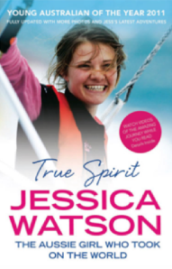

.webp)
Indigo Blue
Hachette Children’s Books Australia will be publishing Jessica’s
debut middle-grade novel in January 2018.
Seventeen-year-old Alex is a fish out of water in her new hometown
– the sleepy little lakeside village of Boreen Point where she is
reluctantly sent to live with her slightly eccentric aunt for her
final year of high school. None of Alex’s classmates could care
less about the new girl, so Alex couldn’t care less about them . .
. or so she tries to tell herself.
As a distraction from what is quickly shaping up to be a very
lonely year, Alex spends her savings on a rundown little yacht and
throws herself into restoring it. An offer to help a shy classmate
with a history assignment leads to a curious discovery and the
beginnings of a friendship, but it’s Sam – the sailmaker’s
apprentice – and his mysterious ways that really capture Alex’s
attention…

True Spirit
Winner of Australian Book Industry Awards (ABIA) Awards: General
Non-Fiction Book of the Year 2011
On May 15, 2010, after 210 days at sea and more than 22,000
nautical miles, 16-year-old Jessica Watson sailed her 34-foot boat
triumphantly back to land. She had done it. She was the youngest
person to sail solo, unassisted, and nonstop around the world.
Jessica spent years preparing for this moment, years focused on
achieving her dream. Yet only eight months before, she collided
with a 63,000-ton freighter. It seemed to many that she’d failed
before she’d even begun, but Jessica brushed herself off, held her
head high, and kept going.
Told in Jessica’s own words, True Spirit is the story of her epic
voyage. It tells how a young girl, once afraid of everything,
decided to test herself on an extraordinary adventure that
included gale-force winds, mountainous waves, hazardous icebergs,
and extreme loneliness on a vast sea, with no land in sight and no
help close at hand. True Spirit is an inspiring story of risk,
guts, determination, and achievement that ultimately proves we all
have the power to live our dreams — no matter how big or small.